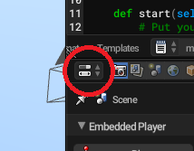
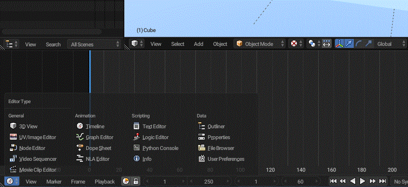
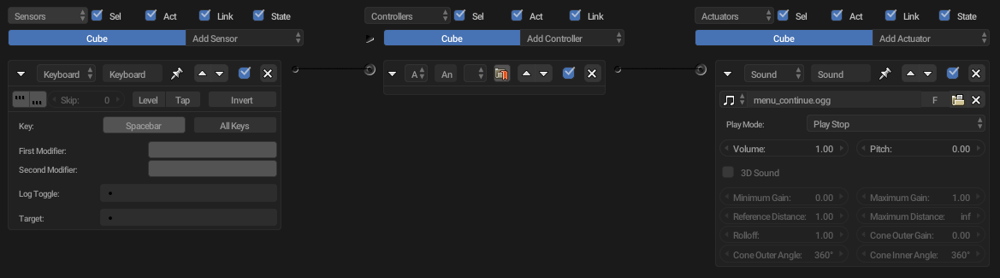

The logic editor can be shown by changing the editor type by clicking them.

Editor Type
And then you'll see a list of them.

Types of editors
Click on Logic Editor and there is your logic editor!
How it works
The sensor is triggered and then sends data to a controller that is connected to it, and the controller sends the data to an actuator that is connected to it. It looks something like this

An example of logic bricks setting
Here, the Keyboard sensor is connected to an And controller and that controller is connected to a Sound actuator. When the user presses Spacebar the sensor is triggered and then the sound is played.
Sensors
A list of sensors
Actuator Sensor
Always Sensor
Armature Sensor
Collision Sensor
Delay Sensor
Joystick Sensor
Keyboard Sensor
Message Sensor
Mouse Sensor
Near Sensor
Property Sensor
Radar Sensor
Random Sensor
Ray Sensor
Controllers
A list of controllers
AND Controller
OR Controller
NAND Controller
NOR Controller
XOR Controller
XNOR Controller
Expression Controller
Python Controller
Actuators
A list of actuators
Armature Actuator
Action Actuator
Camera Actuator
Constraints Actuator
Edit Object Actuator
Filter 2D Actuator
Game Actuator
Message Actuator
Mouse Actuator
Motion Actuator
Parent Actuator
Property Actuator
Random Actuator
Scene Actuator
Steering Actuator
Sound Actuator
State Actuator
Visibility Actuator
Try playing with each of them! And if you're stuck don't worry, you'll find the problem soon by learning in this series.